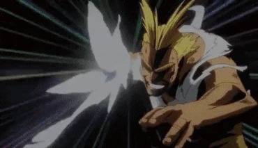

Su informacion principal
Nombre: Toshinori Yagi

Quirk: One For All
Quirk heredado por generaciones que aumenta en forma descomunal su fuerza fisica y mas aspectos derivados
Wiki con informacion mas detallada de All Might
Quirk heredado por generaciones que aumenta en forma descomunal su fuerza fisica y mas aspectos derivados
Wiki con informacion mas detallada de All MightAtaque de largo alcance que es disparado con sus puños en forma de onda de choque y tiene daño de Salpicadura.
Manten el boton para dispararlos automaticamente.
Ataque que realiza un dash y al impactar con un enemigo lo golpea con su puño causando un tornado
Habilidad de porcentaje, que hace que All Might gire y cree un tornado pequeño a su alrededor, asi lanzando a volar a todos los personajes que se acerquen demasiado. Repele algunos ataques enemigos.
Habilidad que le permite a All Might saltar a una gran altura. Si estas al lado de un compañero podras cargarlo usando la habilidad todo el tiempo que te dure el porcentaje.

| Habilidad | Daño | Cargas |
|---|---|---|
| Alpha | 81 | 10 |
| Beta | 70 | 2 |
| Gamma | 100 | 100% |
| Especial | 0 | 100% |